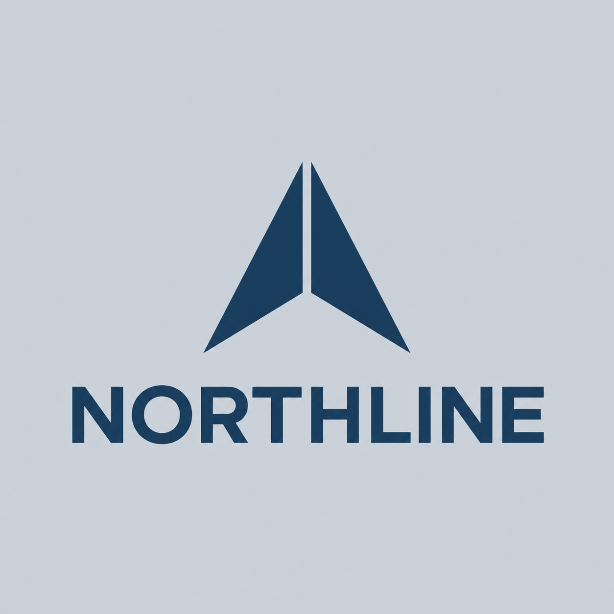

a-v1
1254 x 1254 px
Parent artifact: None · PNG original bytes
Intended colors
Palette p1 · Parent palette: None
Advisory intent · local_harmony
#183A56symbol and wordmark#CDD4DBopaque silver background
Selected the local monochromatic candidate for a precise navy identity on a quiet silver background.
Selected by assistant
Measured colors
pass · Stored measurement only
Report export-ebcbc02f93344a18ba4568016d68980e · 2026-09-12T15:36:26.739603+00:00
Scope: full_image · 1254 x 1254 px
grid_128_pixel_centers · 16384 positions (1.0%); 16384 core, 0 partial-alpha samples.
#C9D0D828.1% · 4612 samples#CAD1D926.6% · 4365 samples#C9D0D919.8% · 3246 samples#C8D0D810.2% · 1669 samples#CAD0D97.1% · 1167 samples#7C90A36.9% · 1133 samples#CED5DC0.8% · 123 samples#C9D0D70.4% · 69 samples
| Target | Match share | Mean ΔE | Max ΔE |
|---|---|---|---|
| #183A56 | 6.7% | 1.80 | 4.88 |
| #CDD4DB | 93.0% | 1.12 | 4.98 |
ΔE threshold: 5; profile: assumed_srgb; policy: logo-color-v1.
Requested lockup
- Layout
- stacked
- Symbol position
- start
- Text alignment
- center
- Typography direction
- medium-bold proportional geometric sans-serif with broad open counters and careful tracking
- Requested font reference
- Space Grotesk
This is requested visual direction, not proof of a font file used in the raster. Gallery text uses the CSS system font.
{kind=link}